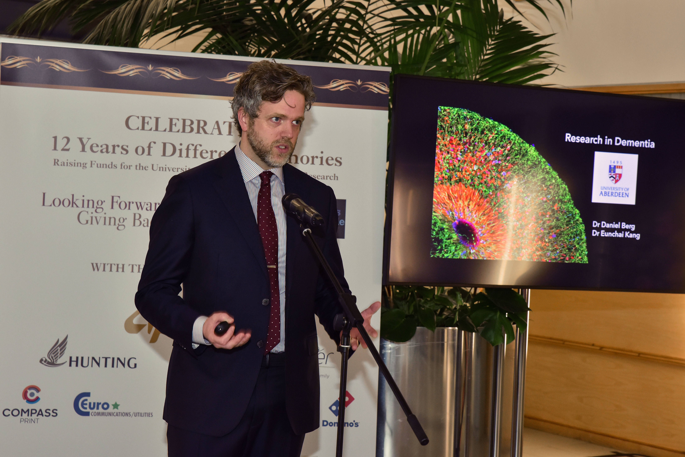

Research
Daniel studies how neural stem cells are established during brain development and how developmental lineages give rise to stem-cell populations that persist into adult life. A major focus is the dentate gyrus of the hippocampus, where developmental neurogenesis transitions into the specialised stem-cell niche that supports adult neurogenesis.
His work also uses human fetal tissue, organoids and cerebroids to investigate how environmental and inflammatory signals alter neural stem-cell behaviour and tissue organisation during development.
Single-cell neuroscience
A major methodological focus is the use of single-cell and single-nucleus approaches to resolve cell states, lineage relationships and developmental transitions that cannot be seen from tissue architecture alone. Daniel is particularly interested in single-cell RNA sequencing and in integrating transcriptomic, spatial and other single-cell measurements to understand how neural stem cells change over time.
Questions I am interested in
- Where do the neural stem cells that support adult dentate gyrus neurogenesis come from?
- How are cell states and developmental lineages organised as the human dentate gyrus forms?
- What can single-cell RNA sequencing reveal about neural stem-cell trajectories that histology alone cannot resolve?
- How do inflammation and other environmental signals alter cell fate, maturation and tissue architecture during brain development?
Research interests
- Dentate gyrus and hippocampal development
- Neural stem-cell development and lineage progression
- Adult neurogenesis
- Single-cell RNA sequencing and single-cell genomics
- Human brain organoids and cerebroids
- Maternal inflammation and neurodevelopment
Background
Training
Daniel completed his undergraduate studies at Uppsala University in Sweden and his PhD at Karolinska Institutet. He then undertook postdoctoral training at Johns Hopkins University and the University of Pennsylvania before moving to Aberdeen.
Career path: Uppsala University → Karolinska Institutet → Johns Hopkins University → University of Pennsylvania → University of Aberdeen.
Outside the lab
Outside the lab, Daniel enjoys singing, hiking and spending time outdoors. He has also taken up running again and is gradually building back towards longer distances.

Teaching & engagement
Teaching and public engagement
Daniel teaches developmental neuroscience at the University of Aberdeen and coordinates the course Embryos to Organs. He is particularly interested in helping students connect classical developmental biology with modern single-cell, imaging and human tissue approaches.
Selected publications
Research highlights
Assir et al. Modeling maternal immune activation in 3D ex vivo human fetal brain cerebroids reveals IL-17A-driven disruption of cortical development. Nature Neuroscience, 2026. View publication
Berg et al. A Common Embryonic Origin of Stem Cells Drives Developmental and Adult Neurogenesis. Cell, 2019. View publication
Shin et al. Single-cell RNA-seq with Waterfall reveals molecular cascades underlying adult neurogenesis. Cell Stem Cell, 2015. View publication